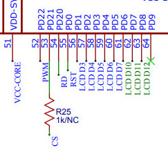
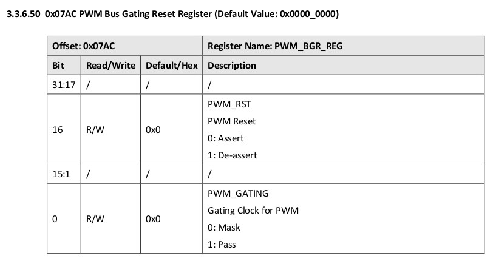
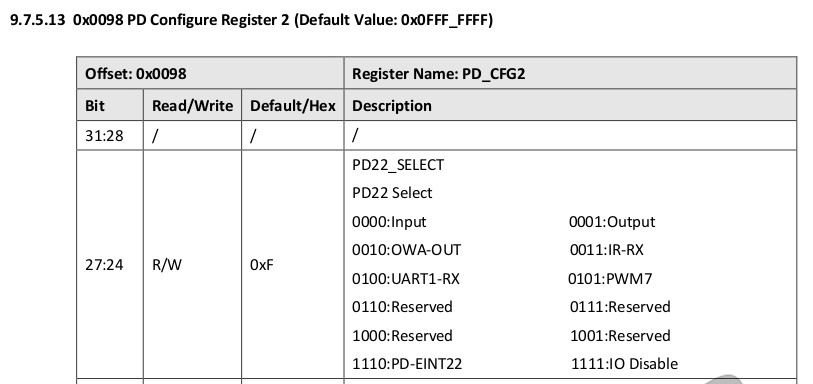
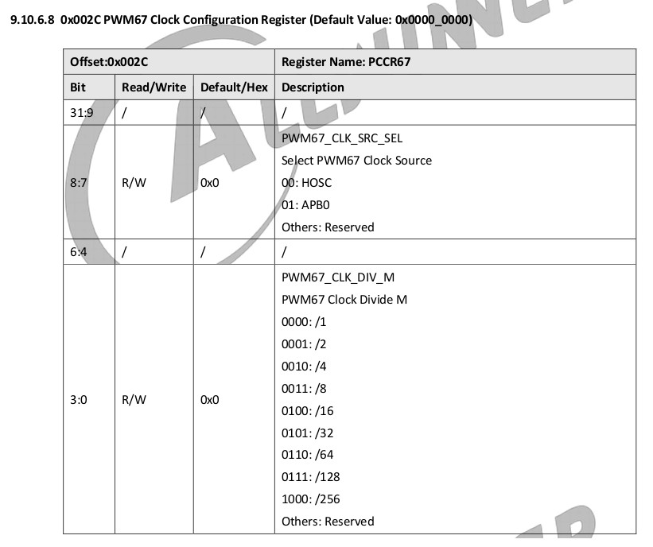
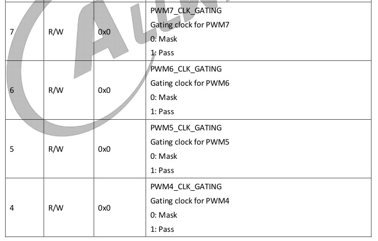
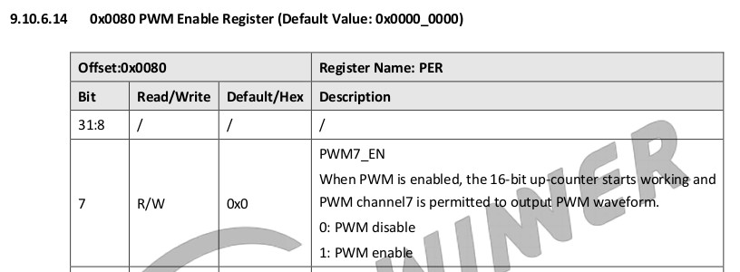
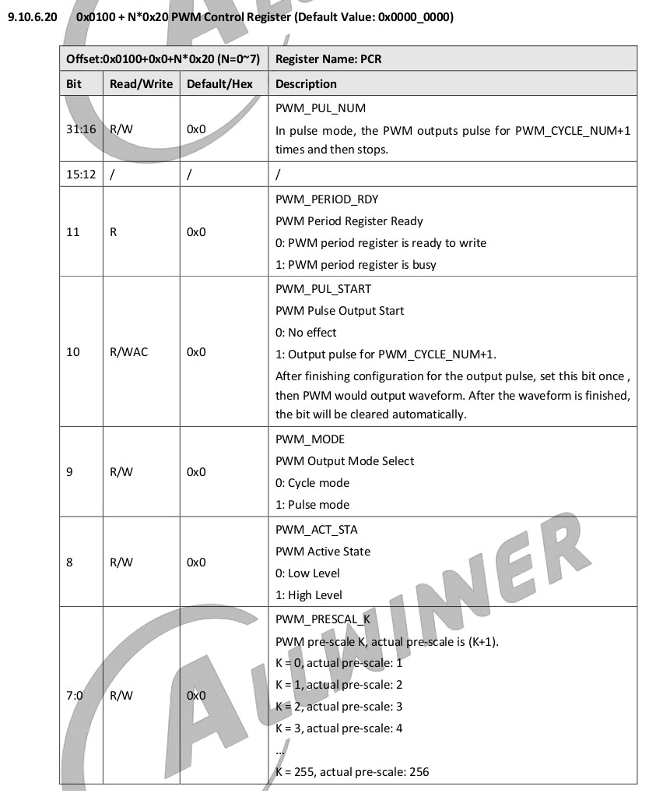
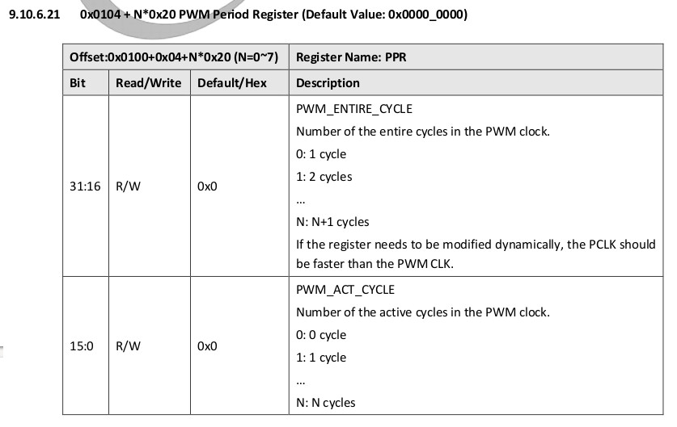
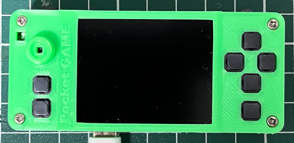
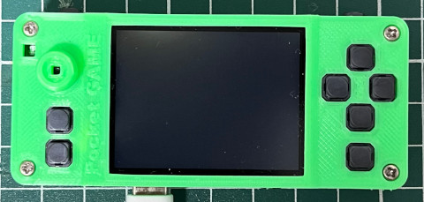

參考資訊：
https://en.wikipedia.org/wiki/Delay_slot
https://github.com/Ouyancheng/FlatHeadBro
https://datasheet.lcsc.com/lcsc/1810231210_Worldsemi-WS2812C_C114587.pdf
LCD背光是連接到PD22(PWM7)








.global _start
.equ CCU_BASE, 0x02001000
.equ PWM_BASE, 0x02000c00
.equ GPIO_BASE, 0x02000000
.equ PWM_BGR_REG, 0x07ac
.equ PD_CFG2, 0x0098
.equ PCCR67, 0x002c
.equ PCGR, 0x0040
.equ PER, 0x0080
.equ PCR, (0x0100 + 0x0000 + (7 * 0x0020))
.equ PPR, (0x0100 + 0x0004 + (7 * 0x0020))
.equ PCNTR, (0x0100 + 0x0008 + (7 * 0x0020))
.text
.long 0x4000006f
.byte 'e','G','O','N','.','B','T','0'
.long 0x5F0A6C39
.long 0x8000
.long 0, 0
.long 0, 0, 0, 0, 0, 0, 0, 0
.long 0, 0, 0, 0, 0, 0, 0, 0
.org 0x0400
_start:
li t0, (1 << 16) | (1 << 0)
li a0, CCU_BASE + PWM_BGR_REG
sw t0, 0(a0)
li t0, (5 << 24)
li a0, GPIO_BASE + PD_CFG2
sw t0, 0(a0)
li t0, (8 << 0)
li a0, PWM_BASE + PCCR67
sw t0, 0(a0)
li t0, (255 << 0)
li a0, PWM_BASE + PCR
sw t0, 0(a0)
li t0, (660 << 16) | (330 << 0)
li a0, PWM_BASE + PPR
sw t0, 0(a0)
li t0, (1 << 7)
li a0, PWM_BASE + PCGR
sw t0, 0(a0)
li t0, (1 << 7)
li a0, PWM_BASE + PER
sw t0, 0(a0)
0:
j 0b
.end
完成

